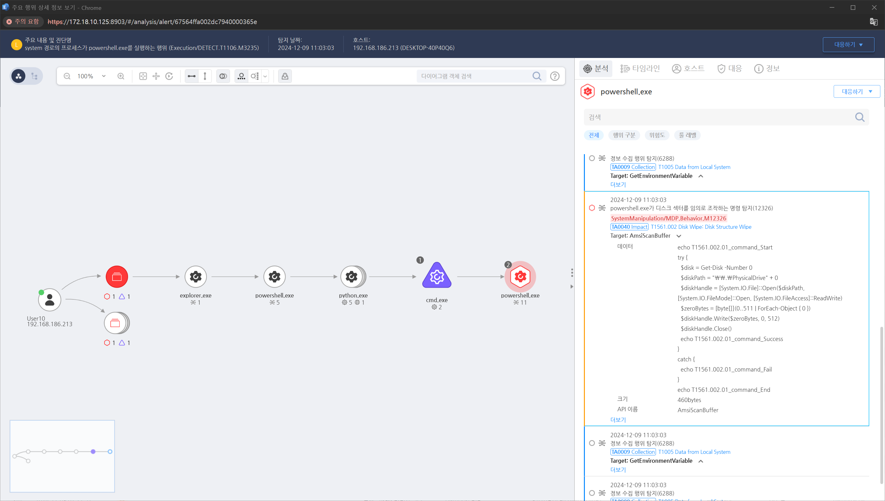

T1561.002.01 디스크 구조 파괴
D3FEND
MITRE ATT&CK 액션을 기준으로 대응 방안을 작성
Detection
powershell.exe가 디스크 섹터를 임의로 조작하는 명령을 탐지합니다.
Detection(EDR)

Response
- Windows 이벤트 로그 모니터링:
디스크 관리 활동, 명령 실행 이벤트와 관련된 이벤트 로그를 모니터링합니다.
- SIEM 및 로그 분석:
디스크 삭제 또는 수정 명령을 탐지하기 위해 로그를 분석합니다.
- Sysmon을 활용한 탐지:
Sysmon을 설정하여 디스크 관련 명령 실행 및 프로세스 활동을 기록합니다.
Mitigations
디스크 및 데이터 접근 제어
- 관리자 계정만 디스크 관리 권한을 가지도록 설정하고, 일반 사용자에게 디스크 구조 변경 도구(예: diskpart, fdisk)에 대한 접근을 차단합니다
- Windows BitLocker를 활성화하여 비인가된 디스크 수정 시도가 발생하면 차단합니다.
AppLocker 또는 WDAC 사용
- 디스크 구조를 변경할 수 있는 도구(예: diskpart.exe, bootrec.exe, format.exe)의 실행을 제한합니다.
백업 및 복구 계획 마련
- 중요한 데이터를 정기적으로 백업하고, 복구 가능한 오프사이트 위치에 보관하며, Windows Server Backup 또는 서드파티 백업 솔루션을 사용합니다.
디스크 쓰기 보호
Affected Techniques
Action 실행시 함께 영향을 받는 다른 Techniqes
| D3FEND |
| D3-DE Disk Erasure |